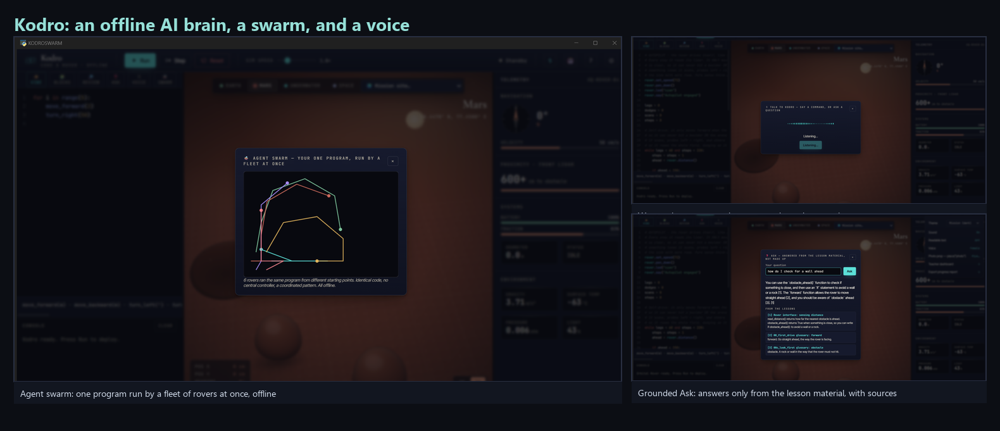

RoboLearn is a desktop application that teaches children to program a simulated planetary rover in real Python. A pupil writes ordinary code, presses Run, and watches the rover drive across Mars, the Moon, an underwater plain or a temperate Earth landscape while a sandbox executes the program and grades it against the goals of the lesson. The project began as a curriculum aligned simulator and has grown an artificial intelligence layer that helps a learner the way a patient teacher would. This report describes that layer, explains how each part works without any connection to the internet, sets the design against the documented limits of today's cloud assistants, and reports a structured evaluation that used fifty distinct user personas.
The guiding constraint shapes everything below. A school laptop may have flaky or filtered internet, a tight budget, and a duty of care toward the data of minors. RoboLearn therefore keeps every byte of pupil work on the machine and treats the network as something it must never need. The artificial intelligence features run on a local model through Ollama when one is present, and the application degrades cleanly to its rule based behaviour when one is not. The result is a tutor whose privacy and offline operation are properties of the architecture rather than promises in a policy.
General assistants such as Claude, ChatGPT, Perplexity and Gemini are capable, yet they share a set of limits that matter a great deal in a classroom. Hallucination is intrinsic rather than a fault waiting to be patched, so a confident but wrong function name or wiring step can mislead a child who cannot yet tell the difference (Huang et al., 2023). These systems start each session effectively blank, because durable memory of a learner remains an open research problem rather than a shipped feature (Zhang et al., 2024; Packer et al., 2023). They depend on a remote service, which means a network round trip, an account for a minor, a per seat cost, and pupil keystrokes leaving the building. They generate from frozen parameters with no built in check against an authoritative source, so retrieval has to be added on top (Lewis et al., 2020). Finally, the deployed weights do not learn from a pupil's mistakes, since genuine self evolution is an early research direction and not a delivered capability (Tao et al., 2024).
RoboLearn does not try to out scale these systems. It answers a narrower question well. The table below sets each documented gap beside the offline response the product makes.
| Limitation in cloud assistants | Why it matters for a child in school | RoboLearn response, fully offline |
|---|---|---|
| Hallucinated facts and code (Huang et al., 2023) | A plausible but wrong instruction is silently misleading to a novice | A second agent reviews generated code and a deterministic sandbox validates it before a pupil sees it |
| No persistent learner memory (Zhang et al., 2024) | A tutor that forgets last lesson cannot scaffold across a term | A local concept strength model and a per pupil profile held in a single sqlite file |
| Hard cloud dependence | Flaky school networks, accounts for minors, recurring cost, data leaving the site | Local model through Ollama with graceful fallback, and no account or network ever required |
| Weak grounding (Lewis et al., 2020) | Answers drift from the specific curriculum and robot interface | Generation is constrained to the taught rover interface and checked against the simulator |
| No real self improvement (Tao et al., 2024) | The system never gets better at helping this class | Honest system level improvement: the hint engine learns from local outcomes which advice unblocks pupils |
Three capabilities form the core of the new work. Each maps to a theme that the wider field is exploring, and each is built so that it is honest about what a small local model can really do.
The application ships twenty four rule based hints. The older engine always returned the first rule that matched, which is sensible but cannot learn that a later rule unblocks a particular class more reliably. The new layer closes that loop without any model or network. When a failing attempt is shown a hint, the store remembers it for that pupil and lesson. The pupil's next graded attempt resolves it, counting a pass as helped and a further failure as not helped, and those outcomes accumulate per rule. The selector then ranks the matching hints by a Laplace smoothed success rate, keeping author order as the tie break so a fresh install behaves exactly like the old engine and only diverges once real evidence has built up. This is the honest shape of self evolution that Tao et al. (2024) distinguish from marketing, and it echoes the verbal reflection loop of Shinn et al. (2023). The model never changes; the surrounding system gets better from local outcomes alone.
Generation already runs one automatic repair pass that fixes code which would crash. The reviewer adds the harder, semantic pass. It reads a finished program against the goal of the lesson as a teacher would and asks whether the program meets that goal, whether it reads clearly, and whether it uses only the functions the lesson teaches. It returns up to three concrete issues and, when it can, a better version. That rewrite is accepted only after it passes the same sandbox the Run button uses, so a hallucinated fix can never reach a pupil. This is the honest offline form of a multi agent system, an author role and a reviewer role realised as two prompts to one local model with a deterministic gate between them, and it draws on the evidence that iterative self feedback and multi agent review improve correctness (Madaan et al., 2023; Du et al., 2023). The wider literature is candid that naive multi agent setups also fail in characteristic ways (Cemri et al., 2025), which is why the gate, rather than another model, has the final word.
Underneath both features sits a per pupil model. Each lesson updates an exponential moving average of strength for the concepts it exercises, the recommender steers a learner toward the weakest concept that an unattempted lesson would practise, a passing streak introduces a stretch lesson with a new concept, and a class heatmap gives a teacher a readable picture of the room. This is the persistent learner memory that cloud assistants lack (Zhang et al., 2024), kept entirely on the device. The table below ties each capability to the theme it serves and the work that grounds it.
| Capability | Theme | How it works offline | Grounding |
|---|---|---|---|
| Self improving hints | Self evolution, system level | Per rule shown and helped counts in sqlite, Laplace smoothed ranking | Tao et al. (2024); Shinn et al. (2023) |
| Second agent code review | Agent collaboration | Author and reviewer prompts on one local model, sandbox gate | Madaan et al. (2023); Du et al. (2023); Cemri et al. (2025) |
| Context aware learner model | Memory and personalisation | Concept strength EMA and recommender over a local profile | Zhang et al. (2024); Packer et al. (2023) |
| Grounded generation | Grounding | Generation constrained to the taught interface, checked by the simulator | Lewis et al. (2020); Huang et al. (2023) |
| Local feedback for novices | Education | Misconception aware hints, no answer giving | Jacobs and Jaschke (2024); VanLehn (2011) |
The artificial intelligence layer sits inside a complete teaching tool. The table records the breadth a teacher actually meets, so the reader can judge the product rather than a single feature.
| Area | What it provides |
|---|---|
| Core coding | Real Python with a sandboxed executor, trace driven grading, and eighteen lessons across sequence, selection, iteration, functions and sensors |
| Worlds | Mars, the Moon and an underwater plain, a temperate Earth rendered as a real map with farmland, forests, roads and a river, and real mission sites with real gravity, traction, temperature and light |
| Vibe coding | A description becomes Python written by the local model, streamed into the editor, never run on its own |
| Blocks mode | A click to stack palette that compiles to the same real Python |
| Budget Robot Builder | A budget becomes a real hardware guide with parts, costs, build steps, a command to hardware map and a drawn schematic |
| Themes and access | Nine visual themes, a readable text mode, offline speech for the rover and offline voice input for the prompt |
| Teacher tools | Multiple local pupil profiles, a concept heatmap, achievements and a progress report export |
The application is a desktop shell that renders a vendored React interface and talks to a Python backend over a thin bridge. Nothing in the stack reaches the network, and the only durable state is a single local database file that a teacher can copy as a backup.
| Layer | Technology | Role |
|---|---|---|
| Interface | React rendered in a desktop web view | Editor, viewport, panels and modals |
| Bridge | Synchronous calls into Python | Lessons, grading, hints, the artificial intelligence methods |
| Engine | Python rover, terrain and trace engine | Executes and grades pupil code in a sandbox |
| Memory | SQLite store and learner model | Profiles, submissions, concept strength, hint outcomes |
| Local AI | Ollama with a small local model | Generation, review and the hardware guide, all optional |
Quality is held by an automated gate that the project runs on every change. The test suite reports 807 passing tests at 86 percent coverage, the type checker is clean across the source, and the linter and formatter pass. The figure below shows three of the offline capabilities captured live from the running application.

The product was checked in two ways. The automated gate guards correctness on every change, and a structured persona study probed the experience from many points of view. The persona study is described honestly in the next section, because the distinction between a simulated study and a study of real people matters for both ethics and interpretation.
The evaluation was a simulated study, and it is reported as one. Fifty personas were generated to span the people who might meet RoboLearn in a school, a club or a home. Each was asked to adopt a goal, inspect the running build together with its source, and return a rating out of ten alongside structured strengths and issues. Because the personas could ground their judgements in concrete files and behaviours, the findings carry a code level specificity, yet they remain the output of a model rather than the response of a child. They should be read as a low cost and broad coverage inspection that surfaces and ranks candidate defects ahead of a real classroom study, not as a measure of human satisfaction. The same fifty personas then re rated the build after the most serious findings were addressed, which gives an honest before and after on one method.
The personas spanned pupils from seven to sixteen, classroom teachers, a special educational needs coordinator, home education parents, a code club leader, a teaching assistant and a sceptical information technology lead. They varied in coding ability from absolute beginner to keen tinkerer, in access needs including dyslexia, low vision, motor difficulty, English as an additional language and colour blindness, and in device from an old offline laptop with no local model installed to a shared classroom machine on a locked network. The two rounds are summarised below.
| Round | Personas | Mean | Median | Range | Ratings of eight or more |
|---|---|---|---|---|---|
| Round one, first contact | 50 | 5.86 / 10 | 6 | 3 to 9 | 5 personas, 10 percent |
| Round two, focused re-check, read only inspectors | 12 | 6.5 / 10 | 6 | 5 to 8 | 2 personas, 17 percent |
The first round did not return a flattering number, and that is the point of running it honestly. A mean of 5.86 reflects a strong offline core that the personas consistently praised, set against a set of real defects they were able to name precisely. The most valuable finding was structural. Several whole subsystems, including the concept strength model, the next lesson recommender and the achievements, were wired only into the legacy desktop shell and were inert in the web build that pupils actually run. The issues raised most often are recorded below with the status after the second round.
| Finding in round one | Personas | Severity | Status |
|---|---|---|---|
| Learner model, recommender and achievements inert in the web build | 17 | blocker | Fixed. Wired into submit_attempt; concept strength and the heatmap now move on every graded run |
| Rover rendered on a different world than it was graded against | 11 | blocker | Fixed. Loading a lesson now sets the world to the lesson terrain |
| Code reviewer judged taught functions against a partial list | 8 | major | Fixed. The reviewer now uses the full rover interface |
| No read aloud control on lesson text, speech is Windows only | 9 | blocker | Planned, see Section 8 |
| No colour blind safe theme, secondary text below contrast guidance | 9 | blocker | Planned, see Section 8 |
| Documentation inconsistent on lesson count and audience | 14 | major | Planned, see Section 8 |
| Blocks mode lacks reordering and Scratch style nesting | 11 | major | Planned, see Section 8 |
The second round confirmed the direction of travel. A focused panel of twelve personas, drawn from the original fifty and run as read only inspectors so that they could read the patched source but never change it, returned a mean of 6.5 out of ten, up from 5.86. Each of them verified in the code that the learner model now updates from the web build, that a lesson loads its own world, and that the reviewer judges against the whole rover interface. The score did not leap to a perfect ten, and an honest report would not claim that it had. The remaining distance is held by the medium issues that the first round had already named.
The personas were equally clear about what already worked. They confirmed that the offline guarantee is enforced in code rather than promised in prose, that the absence of a local model produces a calm message rather than a failure, that the blocks to Python bridge is a genuine teaching strength, and that the second agent review with its sandbox gate is a sound design. The second round added one further finding worth recording, that the teacher heatmap, like the learner model before it, still lives only in the legacy shell, which becomes the first item in the work that follows.
The work is honest about its boundaries. A small local model is weaker than a large cloud model, so generation and review are scoped to a narrow, checkable domain rather than open ended help. The persona study is a simulation that guides design and cannot replace observation of real children in a classroom, which is planned as a later, ethics approved stage. The improvement in the hint engine is at the level of the system rather than the model, which is the honest claim to make. The table sets out the next steps.
| Direction | Planned work, with the round it came from |
|---|---|
| Teacher view in the web build | Port the class heatmap and the pupil management that still live only in the legacy shell into the shipped application, the way the learner model was ported in this work |
| Read aloud and access | A read aloud control on the lesson text, a speech rate setting, and a colour blind safe high contrast theme, with secondary text lifted to meet the contrast guidance |
| Blocks editing | Reordering of placed blocks and a visible nesting model, so the blocks experience matches the click to build strength the personas praised |
| Grounded answers | A fully local retrieval store over the lesson glossary and rover interface, with the source shown beside every answer |
| Classroom study | An observed study with real pupils under the appropriate ethics approval, which the simulated study can only stand in for |
Bloom, B.S. (1984) The 2 Sigma Problem: The Search for Methods of Group Instruction as Effective as One to One Tutoring. Educational Researcher, 13(6), pp. 4 to 16. Available at: https://journals.sagepub.com/doi/10.3102/0013189X013006004
Cemri, M., Pan, M.Z., Yang, S. et al. (2025) Why Do Multi Agent LLM Systems Fail? arXiv preprint arXiv:2503.13657. Available at: https://arxiv.org/abs/2503.13657
Du, Y., Li, S., Torralba, A., Tenenbaum, J.B. and Mordatch, I. (2023) Improving Factuality and Reasoning in Language Models through Multiagent Debate. arXiv preprint arXiv:2305.14325. Available at: https://arxiv.org/abs/2305.14325
Huang, L., Yu, W., Ma, W. et al. (2023) A Survey on Hallucination in Large Language Models: Principles, Taxonomy, Challenges, and Open Questions. ACM Transactions on Information Systems (arXiv:2311.05232). Available at: https://arxiv.org/abs/2311.05232
Jacobs, S. and Jaschke, S. (2024) Evaluating the Application of Large Language Models to Generate Feedback in Programming Education. arXiv preprint arXiv:2403.09744. Available at: https://arxiv.org/abs/2403.09744
Lewis, P., Perez, E., Piktus, A. et al. (2020) Retrieval Augmented Generation for Knowledge Intensive NLP Tasks. Advances in Neural Information Processing Systems 33 (arXiv:2005.11401). Available at: https://arxiv.org/abs/2005.11401
Madaan, A., Tandon, N., Gupta, P. et al. (2023) Self Refine: Iterative Refinement with Self Feedback. arXiv preprint arXiv:2303.17651. Available at: https://arxiv.org/abs/2303.17651
Packer, C., Wooders, S., Lin, K. et al. (2023) MemGPT: Towards LLMs as Operating Systems. arXiv preprint arXiv:2310.08560. Available at: https://arxiv.org/abs/2310.08560
Shinn, N., Cassano, F., Berman, E., Gopinath, A., Narasimhan, K. and Yao, S. (2023) Reflexion: Language Agents with Verbal Reinforcement Learning. arXiv preprint arXiv:2303.11366. Available at: https://arxiv.org/abs/2303.11366
Tao, Z., Lin, T.E., Chen, X. et al. (2024) A Survey on Self Evolution of Large Language Models. arXiv preprint arXiv:2404.14387. Available at: https://arxiv.org/abs/2404.14387
VanLehn, K. (2011) The Relative Effectiveness of Human Tutoring, Intelligent Tutoring Systems, and Other Tutoring Systems. Educational Psychologist, 46(4), pp. 197 to 221. Available at: https://doi.org/10.1080/00461520.2011.611369
Weintrop, D. and Wilensky, U. (2017) Comparing Block Based and Text Based Programming in High School Computer Science Classrooms. ACM Transactions on Computing Education, 18(1), Article 3. Available at: https://dl.acm.org/doi/10.1145/3089799
Zhang, Z., Bo, X., Ma, C. et al. (2024) A Survey on the Memory Mechanism of Large Language Model based Agents. arXiv preprint arXiv:2404.13501. Available at: https://arxiv.org/abs/2404.13501
Generative artificial intelligence assisted the development of the software and the drafting of this report. All technical claims reflect the running system, the evaluation figures are reported as measured from the simulated persona study, and every reference above was checked in a browser at the time of writing.